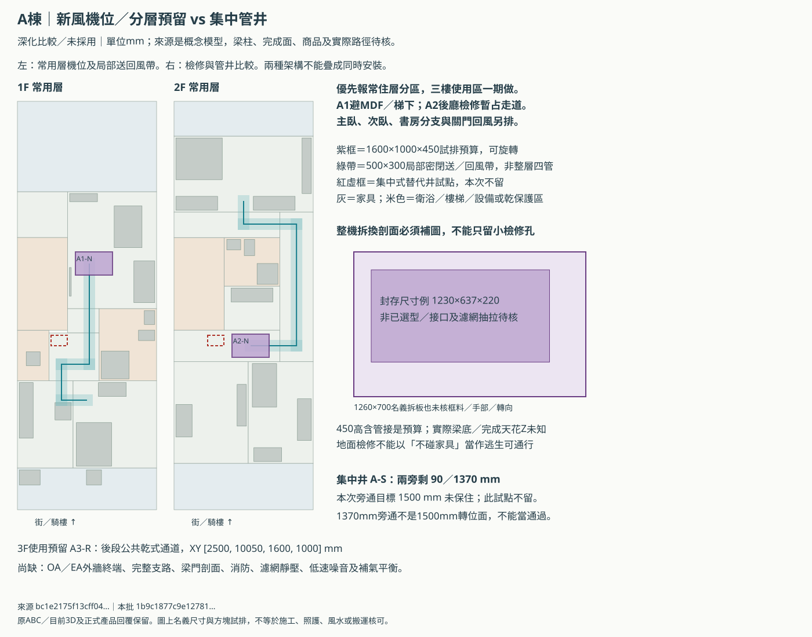
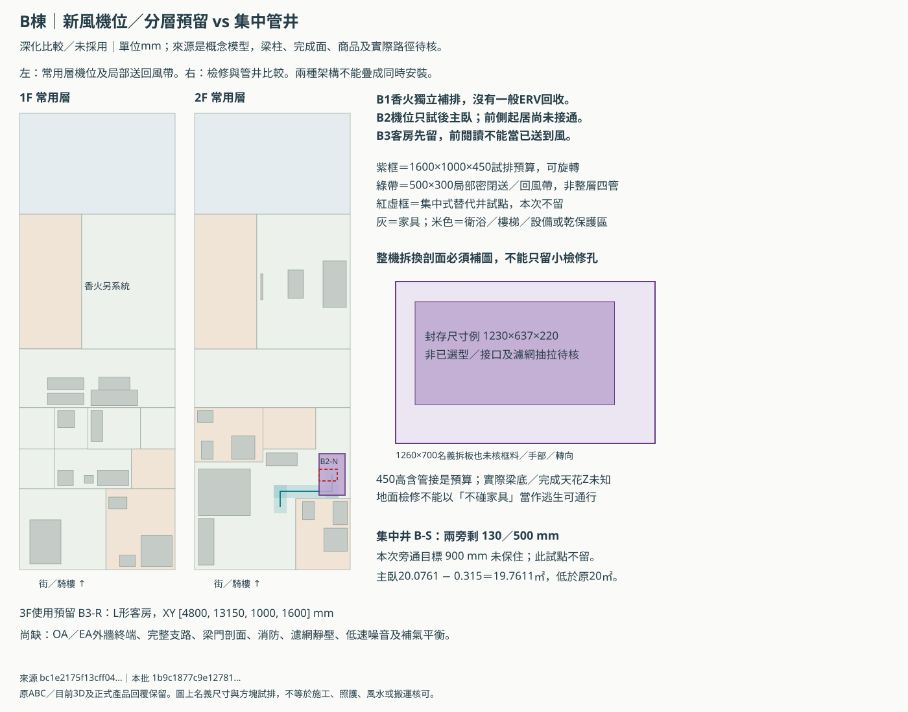
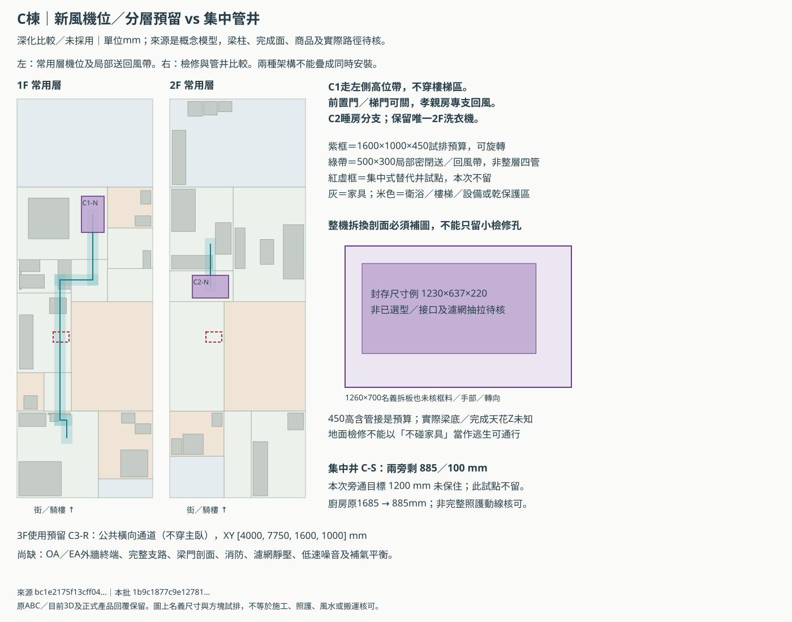

ABC全熱／新風：先留得下、修得到，再選機
獨立深化比較／未採用。原ABC與3D、床櫃門窗、B前後搬轎兩版及149份控制均保留。尚未選機型、台數或完整路由；不是施工、消防、照護或風水核可。
建議：優先深化常用層分區，集中式保留替代報價
先請建商同範圍報常用層分區案，中央案留替代；三個中央管井試點均不保留，不代表找不到別處。
| 集中井替代試點 | 兩旁剩mm | 比較目標mm | 代價 | 處理 |
|---|---|---|---|---|
| A-S | [90, 1370] | 1500 | 照護轉位保護的保守試排目標，非走廊法定值；單一橫剖寬度不能證明轉彎。 | 這個點不留，不代表所有中央案不可行 |
| B-S | [130, 500] | 900 | 主臥19.7611㎡，低於20㎡ | 這個點不留，不代表所有中央案不可行 |
| C-S | [885, 100] | 1200 | 廚房／照護側動線1200mm是本次保守比較目標，非已核法規或完整動線。 | 這個點不留，不代表所有中央案不可行 |
A照護、B入口與主臥、C廚房是三個試點的實際代價。不能為了把管井塞進去自動縮掉房間或宣稱可轉位。集中機位可先比較A1／B2／C1相同乾區，但容量、實際機體及跨層幹線未核，不能當成三台即可解決。
8處機位／檢修預算，不等於採購8台
| 候選 | 室內乾區 | 平面預算mm | 階段 | 仍需處理 |
|---|---|---|---|---|
| A1-N | 前段合併客餐廳（騎樓後） | [2500, 6500, 1600, 1000] | 常住層一期 | 客餐天花局部候選，不在床／MDF／梯下；檢修時客餐需局部清空。 |
| A2-N | 後段公共乾區（不穿更衣室） | [2500, 10050, 1600, 1000] | 常住層一期 | 後梯廳乾區候選；拆換占走道，逃生不能因檢修失效。 |
| A3-R | 後段公共乾式通道 | [2500, 10050, 1600, 1000] | 三樓使用區一期，不只留管 | 劇院／客房使用區需一期供風；人數未定不等0，也不是只留空管。 |
| B2-N | L形主臥 | [4800, 13150, 1000, 1600] | 常住層一期 | 主臥入口乾區上方，非床上／乾背櫃室；前側起居送回風尚無完整避保護區路由，台數不能定為一台。 |
| B3-R | L形客房 | [4800, 13150, 1000, 1600] | 三樓使用區一期，不只留管 | 客房／前側閱讀使用區需一期供風，不是只留空管；前側分支仍待整合。 |
| C1-N | 開放客餐廳｜四人餐桌區 | [2850, 4300, 1000, 1600] | 常住層一期 | 餐區右側乾式天花候選，避鞋櫃與8550前置隔間；檢修會用到餐區通道，安全架梯／逃生、梁／管接及整機拆換未核。 |
| C2-N | 開放起居延伸／通行（不重複計面積） | [1000, 7800, 1600, 1000] | 常住層一期 | 前側起居凹位；睡房專支回風，後側小廚／衛浴獨排，不能開梯門替代。 |
| C3-R | 公共橫向通道（不穿主臥） | [4000, 7750, 1600, 1000] | 三樓使用區一期，不只留管 | 前梯廳乾區預留；健身／閱讀使用區需一期供風，不在運動器具／床上，檢修與疏散仍需審核。 |
常住層有5處候選、3F有3處使用預留；三樓已規劃使用區一期要供風，不是只留空管。全部只是含管接1600×1000×450mm試排。相同地面投影暫作檢修帶，沒有障礙不代表架梯、門扇、逃生與整機運出已可行。
封存尺寸例本體1230×637×220mm未選型。1260×700名義可拆面板仍未核框料、手部、公差、轉向與接口；不可當成合格孔徑，800×800小孔也不能自動證明全機可拆換。
B2／B3只試後段局部。前側乾起居仍須送回風；不可省略或擅借乾背櫃室。前側獨立小系統或另條乾式高位帶由建商比較，未確認前不鎖一層一機；不新增未確認的乾風管宗教禁令，也不宣稱已符合。
局部密閉管帶，不是完整四管施工合圖
| 部分帶 | 用途 | 下方家具XY投影 | C-AC01同層XY交叉 | 完成狀態 |
|---|---|---|---|---|
| A1-D | 客餐到孝親房的部分密閉送回風帶；過廚區但不設一般回風口。 | ['A:floor-1:kitchen:furniture:fridge'] | 不適用 | 高度未知／不是整層接通 |
| A2-D | 後機位沿右走道到主臥部分帶；次臥／書房支路、門上穿越未完成。 | 列出物件無投影交叉 | 不適用 | 高度未知／不是整層接通 |
| B2-D | 只試主臥內局部分配，沒有表示前側起居已接通；不經乾背櫃室或浴室。 | 列出物件無投影交叉 | 不適用 | 高度未知／不是整層接通 |
| C1-D | 餐區右側候選至左側高位廚區／照護通道，500寬整帶避開樓梯區再轉向；密閉風管過廚區不等於吸取廚房回風。 | ['C:floor-1:elder:furniture:linen-basket', 'C:floor-1:elder:furniture:tv', 'C:floor-1:kitchen:furniture:fridge', 'C:floor-1:living:furniture:sofa'] | [] | 高度未知／不是整層接通 |
| C2-D | 前側睡房部分送回風帶；不經樓梯門，後段與所有末端尚未排定。 | ['C:floor-2:guestroom2f:furniture:desk', 'C:floor-2:guestroom2f:furniture:wardrobe'] | [] | 高度未知／不是整層接通 |
500×300帶內兩支Ø125內徑、各側25保溫，含間距及邊緣的寬度預算剛好500mm，沒有多餘寬度。中央新井另用兩支Ø150作預算。兩管獨立，浴廁、油煙與香火不併一般回收。
各帶尚無完成面高度Z。C1冰箱／C2衣櫃等下方投影必須有剖面核對；C-AC01只檢查既有候選線同層XY，不是三維無碰撞。外牆OA／EA位置、防雨、防短路與合法開口完全未定；不能擅用鄰地側牆。
三棟各報三種等範圍案，未知費用不當0
中央／分層／過濾新風＋有設計排出，各案同樣涵蓋關門睡房、近期使用3F、獨排補氣、濾網、噪音、維修與實測；B1香火獨立列費但不能漏報。分層可能增加機台、濾網及外牆口，中央可能增加管井、防火與跨層消音；沒有同範圍報價不宣布哪個最省。
10年簡算＝一次工程費＋10×（年濾網＋年人工＋年電費）＋十年換件；稅保另註。任一項未知，總額留空。不是折現評估，也沒有捏造價格或耗電。
9列建商等範圍報價表／8處檢修與整機拆換回覆／機位座標／部分管帶／風量／風速敏感度。
25～35m³/h每人只是初估。C2一人低速工作點特別要核；大風量機器可調速不等於能在髒濾網靜壓下穩定供少量新風。全熱不當主動除濕／冷氣／香火排煙／MDF散熱。
不得默默放寬的條件
- ABC各自獨立空氣系統；B1香火補氣及源頭排氣另系統，不併一般ERV回收。
- B既有500×300只留兩條浴廁排氣；不使用乾背櫃保護室放主機／立管。
- C前置門／梯門可關，單台洗衣機留2F；既有C-AC01冷媒候選線保持不動。
- 窗、主臥及衛浴原面積目標、床與照護轉位、樓梯淨高不以新風需求自動放寬。
- 三樓使用人數未知不是0；近期使用區必須同期啟用；主機台數與低速能力未選定。
- 不把風管平面帶、示意風速或空白天花當成完整安裝可行。
還沒完成的關卡
- 實際梁板／完成天花、固定牆與檢修安全
- 四接口與完整OA／EA外牆終端／防雨防短路
- 各關門房的送回風末端／聲學／低速工作點
- 浴室油煙香火同開補氣及含濕量／冷凝
- B前側乾起居分區路由／台數；原兩衛面積及無窗偏好仍未解
- 三樓一期使用範圍／實際同時人數及法規審查
純平面預算暫未找到床櫃／樓梯保護區交叉，不是完整可裝結論。B原兩衛面積與公衛無窗偏好仍未解，也沒有因裝新風就算接受。
三棟局部套繪



本批 1b9c1877c9e12781f8f9ec3369adb8f91555b09c2f8bab3159f4088fe0897a59
靜態輸出；瀏覽器／WebGL未執行。法規、產品、消防、宗教及照護核可未知。